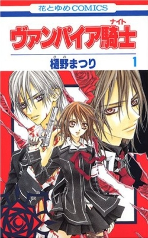

From Wikipedia, the free encyclopedia
Vampire Knight (Japanese: ヴァンパイア騎士ナイト, Hepburn: Vanpaia Naito) is a Japanese manga series written by Matsuri Hino. It was serialized in Hakusensha's shōjo manga magazine LaLa from 2004 to 2013, with its chapters collected in nineteen tankōbon volumes. The manga series is licensed in English by Viz Media, which has released all nineteen volumes. The English adaptation premiered in the July 2006 issue of Viz's Shojo Beat magazine, with the collected volumes being published on a quarterly basis. Two drama CDs were created for the series, as well as a twenty-six episode anime adaptation based on the first two sagas. Produced by Studio Deen, the anime series' first season aired in Japan on TV Tokyo between April and July 2008. The second season, aired on the same station from October to December 2008. The anime uses many of the same voice actors as were used for the drama CDs. The anime adaptation was licensed for release in North America by Viz Media.
The plot follows with the main protagonist's name Yuki Cross earliest childhood in a stormy night during winter, where she was attack by a bloodthirsty vampire and got saved by Kaname Kuran, a pureblood vampire. Ten years later, Yuki got adopted by The Headmaster of Cross Academy, Kaien Cross and has become a guardian of the vampire race and protecting her childhood crush, Kaname, from the discovery as he leads the group of vampires at the most elite boarding school. At her side is Zero Kiryu a childhood friend who hatred towards vampires that destroyed everything held dearly leaves him which led him not to trust them. Coexisting seems all good and well, but have the vampires truly renounced their murderous ways or the dark truth of their actions. The price of misplaced trust could be worse than death.
The original series written and illustrated by Matsuri Hino, was serialized in Hakushensha's shojo manga magazine LaLa on November 24,2005 to May 24,2013. Each individual nineteen tankoban volumes released from July 10, 2005, to November 5, 2013. It got an English release in North America by Viz Media in the addition to publishing the individual's volumes within the series through July 2006 issue until the magazine discontinued after August 2009 Issue. It is licensed for English release in Australia and New Zealand by Madman Entertainment, which released fifteen volumes. The final volume was released in English on October 14, 2014 by Viz Media. 
Vampire Knight had officially been released as thirteen-episode anime television series by Studio Deen, which broadcast on TV Tokyo, from April 8 to July 1, 2008, the second season Vampire knight Guilty aired October 7 to December 30,2008.